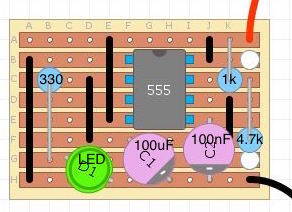
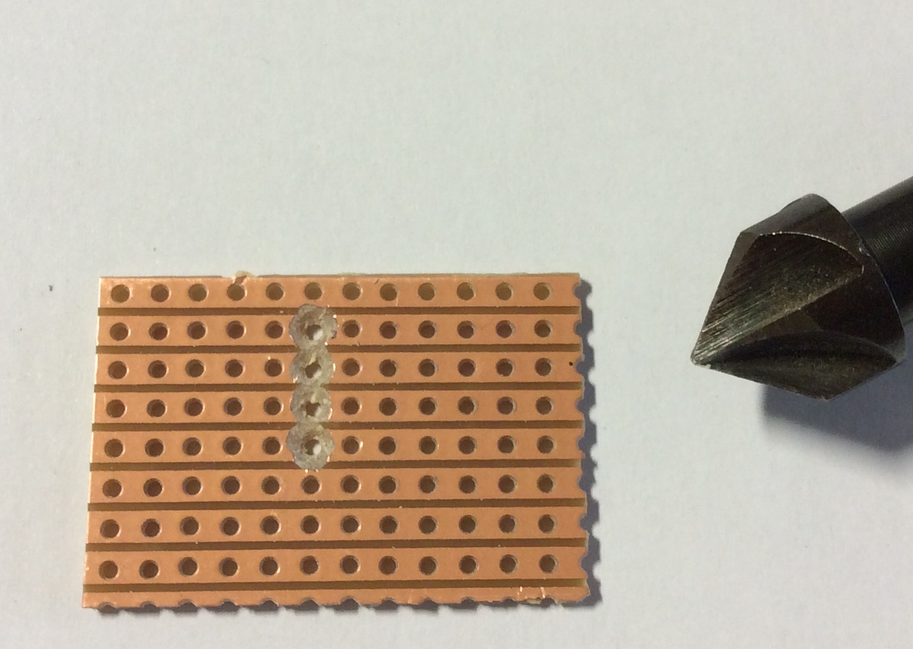
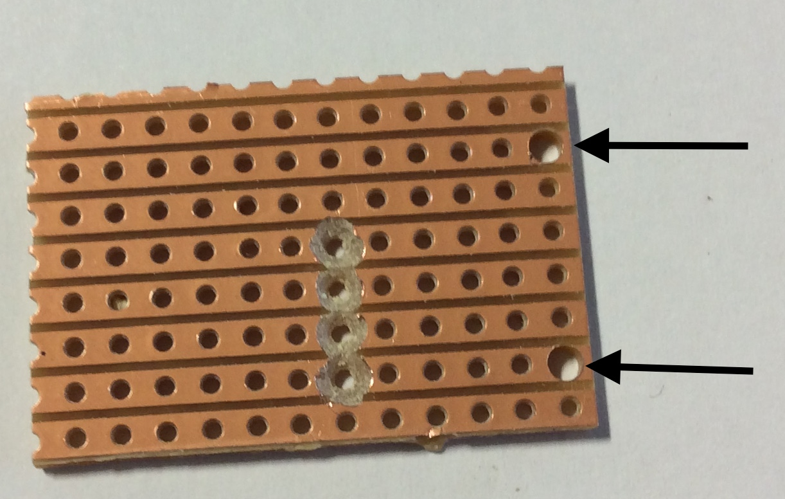
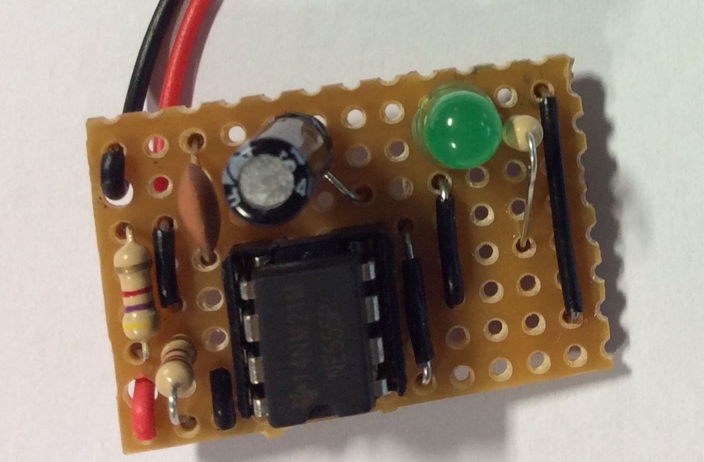
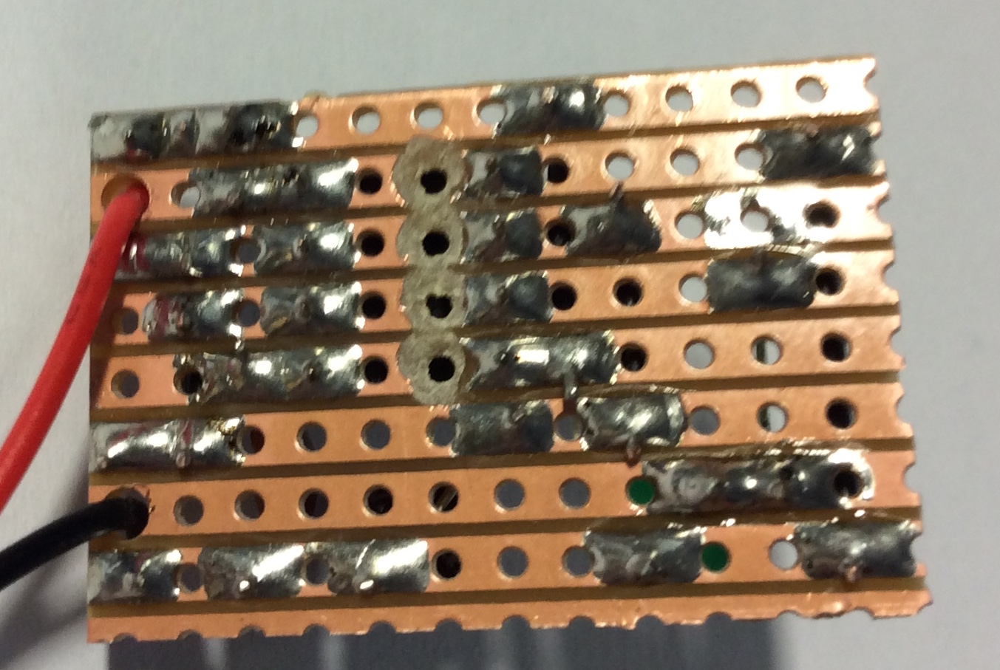
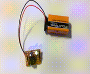

555 Astable Multivibrator
Table of Contents
1 Introduction
- Using DIYlc, design your own 555 Astable circuit.
- You can find DIYlc here on the open drive G:\Systems and Control\Student Home software\DIYlc.
- below is an example, but you can create your own design.

- Once you have designed your board, you can get a piece of veroboard and cut it to size, by counting the holes on your own design.
Breaking the tracks
- Before you can solder or place your components, you need to prepare the veroboard.
- First, you will need to break the track under the 555 IC. This can be done using a track break of using a countersink tool as I have below.

- You will now need to drill 2 holes for the battery wire using a 2mm drill bit.

Component placement
- Below is a picture of an example board.
- Note how the components are as close to the board as possible, along with the jump wires.
  